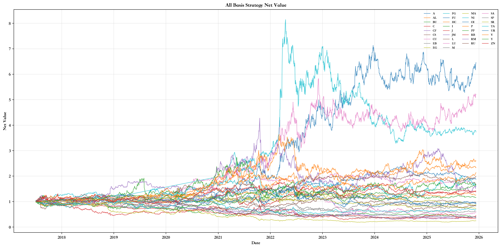
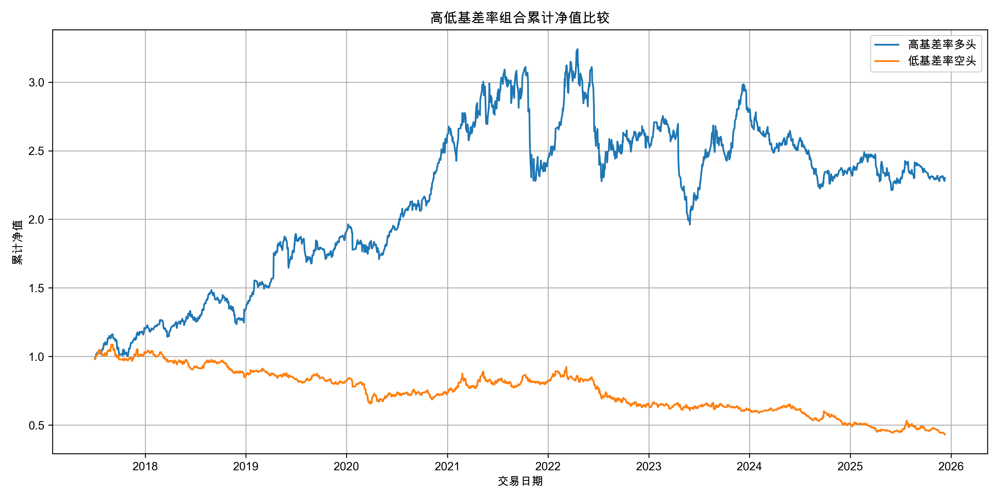
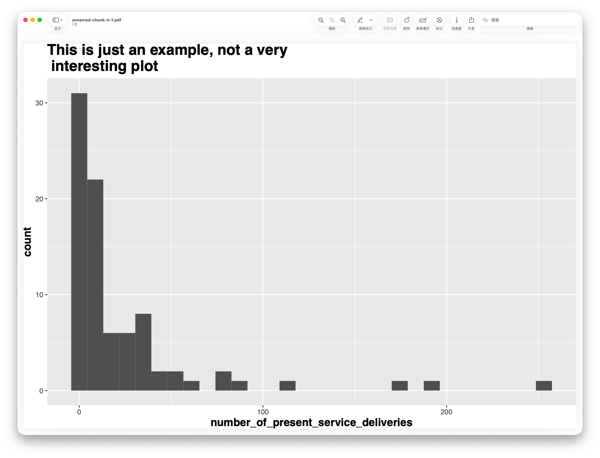

Showcasing my deep practice in multi-factor quantitative research, trading architecture development, financial derivatives pricing, and statistical modeling.

A fully asynchronous microservices-based quant trading terminal. Deeply integrates benchmark macro risk monitoring, Z-Score mean reversion arbitrage, parametric VaR, and Kelly Criterion dynamic capital allocation.
Methods: Async Microservices · StatArb · Parametric VaR · Dynamic Position Sizing
Tech Stack: Python · Asyncio · Pandas-TA · SQLite · Streamlit
View Architecture Details
Performed feature engineering on large-scale business datasets using Python; applied EDA techniques to identify patterns in high-dimensional data. Fine-tuned model parameters to optimize predictive accuracy for specific business scenarios, demonstrating logical problem-solving skills.
Methods: Python · Feature Engineering · EDA
Tech Stack: Python · Pandas · NumPy · Scikit-Learn

Analyzed community impact through data cleaning and regression analysis in Python and R; designed visualizations to communicate key trends to stakeholders.
Methods: Python · R · Regression Analysis · Visualization
Tech Stack: Python · R · Matplotlib